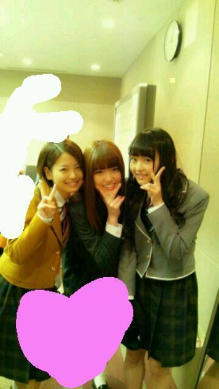

2012/1121Wedありがとうまでの距離っ(o・・o)
こんばんごっっ(o・・o)
さゆりんごっ(o・・o)
昨日はお絵かき会、ありがとうございましたっ(*^^*)
きてくださった３名の方
ありがとうございましたと
ごめんなさいいいいいいいい(´；ω；`)
まちゅむらの
下手な絵でごめんなさいい(´；ω；`)
けど、端正こめて描いたので
大切にしてねっっ(o・・o)/笑
当たらなかったけど
応募してくださった皆さんも
ありがとうございましたっ(*^^*)
また開催してほしいなー(>_<)
楽しかったなー(>_<)♪
ベレー帽を被ったのに
時間がなくて写真をとれなかった(>_<)
って思ったら
ちゃんとナタリーさんが
撮ってくださってました|＾▽＾)ノ
よかったらみてくださいっっ(o・・o)
多分満面の笑みの私がいます。
私は気づいてしまった...
ナタリーさんに掲載される松村の写真は
満面の笑みのやつばかりだと！！
一般的に雑誌にのるような
お目めがぱっちりの写真ではなく
目が細くなるほど
笑ってる写真ばかりなのです...。
何故なんやろう？
まぁ、嫌いじゃないです////照
そのあとの
カレンダーお渡し会もありがとうございましたっ(*^^*)
うちは美雲とペアでしたっっ(o・・o)
うちは生写真を配る係っ(ゝω・´★)
心こめて配りましたが
如何だったでしょうか！？
メンバーの写真やから
ハズレとかはないけど
出来ることなら
松村か美雲のを引いて頂きたかった(>_<)
透視しようとしたけど
何も見えやんかったわ(￣▽￣
これまた楽しかった(*^^*)
ありがとうございましたっ(*^^*)
そしてゆみ姉！
ゆみこのいないレッスンルームは
なんだか寂しくて
心が落ち着かへん
ゆみこの存在の大きさを
今更感じて
すごく引き留めたくもなる
けど、ゆみこの勇気ある決断を
みんな応援してんよっ！
ゆみこは
何でもできて女性の良さを
沢山もってて
うちはいつも羨ましかったんよー(*^^*)
かっこよくて美しい姉さんと
出逢えてよかった！
ありがとう！
乃木坂４６の耽美なる姉！

2012/11/21 00:00
コメント(427)
満面の笑みのさゆりんが好きだよー。
さゆりんの笑顔は世界を救うぜ( ꒪⌓꒪)
さゆりんの笑顔は世界を救うぜ( ꒪⌓꒪)
お疲れい！
似顔絵会みたいな神イベントもっとやってほしい♪
ゆみ姉お疲れ様やな(´▽｀)ノ
似顔絵会みたいな神イベントもっとやってほしい♪
ゆみ姉お疲れ様やな(´▽｀)ノ
まっつんかわいすぎ 似顔絵会行きたかった
似顔絵会行きたかった まっつんに会いたかった
まっつんに会いたかった カレンダーまっつん出なかった
カレンダーまっつん出なかった
似顔絵会、お渡し会お疲れ様です！
やっぱり、ゆみ姉ほど面白くて楽しい人が
乃木坂を卒業してしまうと悲しいですね…
でも、ゆみ姉には新しい夢に向かって
頑張ってほしいですね！
でわ！
やっぱり、ゆみ姉ほど面白くて楽しい人が
乃木坂を卒業してしまうと悲しいですね…
でも、ゆみ姉には新しい夢に向かって
頑張ってほしいですね！
でわ！
お疲れ様！
お絵かきしてほしいー笑
満面の笑みとは…
本当に楽しいんやね！
ええことや(*´∀｀)
さゆりんごの写真ほしいなぁ～♪
おやすみなさいませー♪
お絵かきしてほしいー笑
満面の笑みとは…
本当に楽しいんやね！
ええことや(*´∀｀)
さゆりんごの写真ほしいなぁ～♪
おやすみなさいませー♪
さゆりんごぱ～んち
☆( ゜o(○=( ゜ο゜)o
うまい塩っていう ドレッシングって
どんなのカナ
☆( ゜o(○=( ゜ο゜)o
うまい塩っていう ドレッシングって
どんなのカナ
わんばんこー＼(^o^)／
お絵かき会あったんですね…
それすら知りませんでした…
また次は行きたいです！( ´ ▽ ` )ﾉ
ゆみね〜卒業おめでとうやな。
これからも更新まってるんで
よろしくお願いしもぁす(^-^)/
それではおやすみなさい…zzZZ
お絵かき会あったんですね…
それすら知りませんでした…
また次は行きたいです！( ´ ▽ ` )ﾉ
ゆみね〜卒業おめでとうやな。
これからも更新まってるんで
よろしくお願いしもぁす(^-^)/
それではおやすみなさい…zzZZ
やほ(^-^)
似顔絵会もお渡し会も行けんで辛かった(>_<)
せめてお渡し会は行きたかったけど外れるしorz
ベレー帽被ったさゆりん見たかったぁ(泣)
この前でゆみ姉最後だったんよね
ゆみ姉が自分で選んだ道じゃけん卒業しても応援していく！
今週の乃木どこ楽しみや＼(^o^)／
似顔絵会もお渡し会も行けんで辛かった(>_<)
せめてお渡し会は行きたかったけど外れるしorz
ベレー帽被ったさゆりん見たかったぁ(泣)
この前でゆみ姉最後だったんよね
ゆみ姉が自分で選んだ道じゃけん卒業しても応援していく！
今週の乃木どこ楽しみや＼(^o^)／
さゆりんの笑顔は凄く癒されるよ！
さゆりん大好き(^3^)/
さゆりん大好き(^3^)/
お疲れ(*゜▽゜)v
風呂上がりはあったけぇ～←一応現役学生です。
今ちょうど見たら さゆりんが更新しとるやーん!!!!と思いながらコメントしてる!笑）
さゆりん、そんな絵へたなのか?
確かに....イメージからして。。。（笑）
嘘だよ!!!
気持ちがこもってれば 上手い上手くない関係ない!!!
今の名言じゃね?w
ナタリーに載ってるさゆりんは確かに、
かなりの笑顔のさゆりんしかないな!笑）
元気なさゆりんなら良い!!!
じゃあ~ヾ(○゜▽゜○)
更新ありがとなー!(関西風がベスト!)
またコメントするぜよ!
*`・∀・)ゞ
今度は、「さゆりん」がみんなの世話をする番だよ(^o^)
乃木坂のお姉さんとして、年下の妹たちの手本となってね(^.^)
「さゆりん」は出来る子だから(*^▽^*)
乃木坂のお姉さんとして、年下の妹たちの手本となってね(^.^)
「さゆりん」は出来る子だから(*^▽^*)
こんばんわ(*´>д<)
今日もお疲れー
今日も仕事かー
毎日、大変やね(´・ω・｀)
体調は大丈夫⁇
無理したあかんよー
似顔絵会とBLTお渡し会ねー
似顔絵会って5分も話せるんやってね…
知らんかったよ……(´･ω･`;)
そんなん気にしてないしなー
別に気にしてないしなー(棒読み
ゆみ姉な…
卒業は悲しいけどな
これからも応援してあげようぜ(｀・ω・´)
最近、寒いので
風邪には気をつけて
んじゃあ
明日も一日頑張って( ^_^)/~~~
P.S.
松村さんの笑っている写真は悪くはないです。(棒読み
今日もお疲れー
今日も仕事かー
毎日、大変やね(´・ω・｀)
体調は大丈夫⁇
無理したあかんよー
似顔絵会とBLTお渡し会ねー
似顔絵会って5分も話せるんやってね…
知らんかったよ……(´･ω･`;)
そんなん気にしてないしなー
別に気にしてないしなー(棒読み
ゆみ姉な…
卒業は悲しいけどな
これからも応援してあげようぜ(｀・ω・´)
最近、寒いので
風邪には気をつけて
んじゃあ
明日も一日頑張って( ^_^)/~~~
P.S.
松村さんの笑っている写真は悪くはないです。(棒読み
松村さんいつもお疲れ様です(^-^)/
似顔絵会もカレンダーお渡し会も行けなかったのでナタリーチェックしてみたいと思います^_^
あとゆみねえさんは本当に自分の夢に向かっている姿は本当にカッコイイです！！
ゆみねえさんと松村さんの夢が叶いますよに。
これからも頑張って行きましょう
似顔絵会もカレンダーお渡し会も行けなかったのでナタリーチェックしてみたいと思います^_^
あとゆみねえさんは本当に自分の夢に向かっている姿は本当にカッコイイです！！
ゆみねえさんと松村さんの夢が叶いますよに。
これからも頑張って行きましょう
オッツー（≧∨≦）b
もっちゃんです（＾∇＾）
今回は残念ながら外れちゃったけどいつか似顔絵描いて貰いたいな
おはこんにちばんわぁー♪( ´θ｀)ノ
さゆりん、似顔絵会とカレンダーお渡し会お疲れ様でした( ´ ▽ ` )ﾉ☆
おれも行きたかったなぁーo(｀ω´ )o
自分の顔は薄い感じなので書くのは簡単だとおもってます！（ *- _- `)←こんな感じ？笑
確かに雑誌に載ってるさゆりんは笑顔の写真が多いですよね！！
でもさゆりんの笑顔は100点満点なんで全然OKですねんっ(((o(*ﾟ▽ﾟ*)o)))笑
ゆみ姉の卒業、寂しいですね・・・
でも、ゆみ姉の将来をみんなで応援しましょうね！！(=ﾟωﾟ)ﾉ
では、今日はこの辺で！
最近、眠くなるのが妙に早いゆ〜すでした（笑）
ほな、またにぃー( ´ ▽ ` )ﾉ
名前をかんぱちりんごから変えました。
んで、ナタリーさんの写真では、生駒ちゃんの口を強引にタコにもっていってるさゆりんごが好きです。笑って目、細くなってるのもめっちゃ好きやねん
＼(^o^)／
ゆみこも素敵な妹達に見送られて幸せだったと思います。みんなのブログ見ても思います。
ホントええ妹達だ～
んで、ナタリーさんの写真では、生駒ちゃんの口を強引にタコにもっていってるさゆりんごが好きです。笑って目、細くなってるのもめっちゃ好きやねん
＼(^o^)／
ゆみこも素敵な妹達に見送られて幸せだったと思います。みんなのブログ見ても思います。
ホントええ妹達だ～
お渡し会&似顔絵お疲れ(^-^ゝ゛
ナタリーさんの写真は画質がええから、さゆりんの画像保存したよん(*´∇｀*)
えっ、、、(￣□￣;)!!やめてほしい!?(笑)
俺は保存するからね！(笑)
(すいません、一人で)
次回の乃木どこの予告を見てる限りではしっかり、ゆみ姉の背中をみんなで圧せてたようなので安心しました。
まぁ、詳しくは見てからなんだけどねε=ε=(ノ≧∇≦）ノ
あとうま塩、家にあるよー(o^-')b !
まぁ、ごはんにはかけないけどね(￣▽￣;)
今度、挑戦したいなと思ってるよん(^-^)/
んじゃ、いろいろとお疲れ(^-^ゝ゛
バイバイ( ´∀`)/~~
以上、龍さんでした！
ナタリーさんの写真は画質がええから、さゆりんの画像保存したよん(*´∇｀*)
えっ、、、(￣□￣;)!!やめてほしい!?(笑)
俺は保存するからね！(笑)
(すいません、一人で)
次回の乃木どこの予告を見てる限りではしっかり、ゆみ姉の背中をみんなで圧せてたようなので安心しました。
まぁ、詳しくは見てからなんだけどねε=ε=(ノ≧∇≦）ノ
あとうま塩、家にあるよー(o^-')b !
まぁ、ごはんにはかけないけどね(￣▽￣;)
今度、挑戦したいなと思ってるよん(^-^)/
んじゃ、いろいろとお疲れ(^-^ゝ゛
バイバイ( ´∀`)/~~
以上、龍さんでした！
連日お疲れ様です。自分の連れがさゆにゃんの似顔絵あたり、ほくほくした顔をしていたので、当たった人はみんなあんな感じかなぁー。と想像します。
ほんと風邪流行っているので、気をつけて。
ほんと風邪流行っているので、気をつけて。
お疲れ様でした！
下手でも、さゆりんと喋れて、何より
さゆりんに似顔絵描いてもらえるんだから、
それだけでもう言うことなしでしょ！
透視て！！
出来るならしてほしいけど（笑）
みんなさゆりんのとこ並ぶね。そんな力
あったら（笑）
満面の笑みのさゆりん好きよー！
下手でも、さゆりんと喋れて、何より
さゆりんに似顔絵描いてもらえるんだから、
それだけでもう言うことなしでしょ！
透視て！！
出来るならしてほしいけど（笑）
みんなさゆりんのとこ並ぶね。そんな力
あったら（笑）
満面の笑みのさゆりん好きよー！
お渡し会であなたの写真引いたときは
さすがに笑ったよ、あああて。
なんか最近わからなくなってた気持ち
お渡し会で雲が晴れたみたい。
松村がだいすき。松村の前だとゆえない
ことばっかだけど、大好きだーーーー。
て伝えたから寝る。おや。
さゆりんこんばんは～＼(^o^)／
似顔絵会とカレンダー手渡し会お疲れ様でした(*^^*)
似顔絵会は当たった人うらやましい
さゆりんに書いてもらえるなんて幸せやぁ～
ほんとうらやましいな
写真見てくるね～
満面の笑みのさゆりんいいね
さゆりんの笑顔にはほんと毎日癒されてます
ゆみ姉卒業しちゃったね
ほんと寂しいよ～
でも夢に向かっての卒業だから応援しなきゃだね
ではでは今日も１日お疲れ様でした
ゆっくり休んでね～
おやすみ～(^_^)/
またコメントするね♪
久しぶりのコメントでーすー(^o^ゞ
どんな顔のさゆりんごも可愛いよ(●^o^●)
そして、今日歯みがき粉のうらをみてみるとなんとリンゴ酸というものがつかわれてました。
あありんごよ、今日もありがとう（ ＴДＴ）
どんな顔のさゆりんごも可愛いよ(●^o^●)
そして、今日歯みがき粉のうらをみてみるとなんとリンゴ酸というものがつかわれてました。
あありんごよ、今日もありがとう（ ＴДＴ）
似顔絵会かカレンダーお渡し会行きたかった
お疲れ様
お疲れ様
さゆりん
せーしんです
似顔絵会お疲れ様
さゆりんの絵ってどうなんだろ？
画伯な感じするけど？
こんどちょこっと乗せてみてねｗ
ナタリーに乗ってたさゆりんかわいかったですよ
ゆみこお疲れ様
卒業は悲しいけど
前進するための卒業だからね
今度はさゆりんが引張っていくとか？
キャラ変ですか？とか言われそうだけどね
んじゃまたコメントしますね
せーしんです
似顔絵会お疲れ様
さゆりんの絵ってどうなんだろ？
画伯な感じするけど？
こんどちょこっと乗せてみてねｗ
ナタリーに乗ってたさゆりんかわいかったですよ
ゆみこお疲れ様
卒業は悲しいけど
前進するための卒業だからね
今度はさゆりんが引張っていくとか？
キャラ変ですか？とか言われそうだけどね
んじゃまたコメントしますね
さゆりん、こんばんは
昨日の似顔絵会、当たらなかった
次こそ、当たりますように
さゆりんは、笑顔が一番可愛いから、ナタリーさんも狙って撮ってるね
ゆみ姉が卒業しちゃったから、これからは、さゆりんがみんなをまとめて乃木坂を引っ張っていかなくちゃ
さゆりん、がんばってね＼(^o^)／
昨日の似顔絵会、当たらなかった
次こそ、当たりますように
さゆりんは、笑顔が一番可愛いから、ナタリーさんも狙って撮ってるね
ゆみ姉が卒業しちゃったから、これからは、さゆりんがみんなをまとめて乃木坂を引っ張っていかなくちゃ
さゆりん、がんばってね＼(^o^)／
タイトルの、《ありがとうの距離》ってなんかいいね(^_^)b
深いなぁって思った！
ありがとうの距離って考えたことなかったかも
さゆりんはゆみ姉へのありがとうの距離は近かったんだろうね！
夢に向かって頑張ってほしいです
初コメでした！
こんばんご！
どっちも外れた…
行きたかったな！
どっちも外れた…
行きたかったな！
おひさー。
トミーです!
似顔絵かい三人だけだったんだw
そりゃあたらんねwww
ゆみねえの卒業で一番年上になったまいまいのこと支えてやってな＼(^o^)／
そんな俺の最近ははじめて女子とディズニー行くことになったよ(〃▽〃)
トミーです!
似顔絵かい三人だけだったんだw
そりゃあたらんねwww
ゆみねえの卒業で一番年上になったまいまいのこと支えてやってな＼(^o^)／
そんな俺の最近ははじめて女子とディズニー行くことになったよ(〃▽〃)
さゆりんごさんは絵が上手そうなイメージあったんでショックです（笑）ベレー帽の画像見ましたけどお似合いでしたよ。絵が上手そうに見えますし（笑）透視とか、さゆりんごさん無理ですよ。落ちつかないとあかんみたいなんで（笑）ごめんなさい。岩瀬さん卒業ですね。そしてこれからの新、乃木坂46を応援していきます！
ベレー帽写メないのー
まつむら画伯の写メ見たかったぁ
残念(>_<)
ＨＴＣＪのプレゼンテーション見てたよ
まさかみんなセーラー服で出てくるとは
思わなかったけど
みんなしっかりと自分の意見を行ってて
きちんと準備したんだろうと思った
まさかみんなセーラー服で出てくるとは
思わなかったけど
みんなしっかりと自分の意見を行ってて
きちんと準備したんだろうと思った
お疲れさまっちゅん(･ω･ゞ
まっちゅんの写真が満面の笑みばかり？
そりゃあそうでしょ！
(｀･ω･´)
まっちゅんの笑顔は最高級の可愛さだから！
(*≧▽≦*)
目がなくなっちゃうﾄｺこそツボなんです！
正に女神のような笑顔(*´▽｀*)
ﾋﾞｭﾃｨｰはまいやんに任せて、まっちゅんは
ｷｭｰﾄでいきましょうよ(･∀･)
←個人的な意見です
ｷｭｰﾄなまっちゅん大好きーヽ(*^o^*)丿
あ、あしゅりんﾌﾞﾛｸﾞのまっちゅんも
可愛くて大好きー(*^▽^*)
ほなら
また来まぁしゅ(･ω･ゞ
まっちゅんの写真が満面の笑みばかり？
そりゃあそうでしょ！
(｀･ω･´)
まっちゅんの笑顔は最高級の可愛さだから！
(*≧▽≦*)
目がなくなっちゃうﾄｺこそツボなんです！
正に女神のような笑顔(*´▽｀*)
ﾋﾞｭﾃｨｰはまいやんに任せて、まっちゅんは
ｷｭｰﾄでいきましょうよ(･∀･)
←個人的な意見です
ｷｭｰﾄなまっちゅん大好きーヽ(*^o^*)丿
あ、あしゅりんﾌﾞﾛｸﾞのまっちゅんも
可愛くて大好きー(*^▽^*)
ほなら
また来まぁしゅ(･ω･ゞ
沙友理☆更新ありがとう☆お疲れ様！
似顔絵会いいなぁ〜☆俺も行きたいよ！
佑美子の事、俺もこれからも応援してる！元気で頑張って欲しいねっ☆ずっと素敵な仲間でいてね〜☆
そんじゃ、またねぇ☆
今日も沙友理が、笑顔でありますように！！
似顔絵会いいなぁ〜☆俺も行きたいよ！
佑美子の事、俺もこれからも応援してる！元気で頑張って欲しいねっ☆ずっと素敵な仲間でいてね〜☆
そんじゃ、またねぇ☆
今日も沙友理が、笑顔でありますように！！
こんばんは!!
お渡し会行ったよ♪
写真はななみんでした！
ゆみ姉卒業で寂しくなるだろうけど、一緒に応援していこうね！
お渡し会行ったよ♪
写真はななみんでした！
ゆみ姉卒業で寂しくなるだろうけど、一緒に応援していこうね！
こんばんは。さゆりん。(^_^ゞ
どーなんやろか？
距離は遠いかもしれないけど、いろんな形で届けてみた。
ゆみ姉に「ありがとう」って。
寂しくないって言ったら嘘だ・・・
でもメンバーもみんな笑ってる。
ゆみ姉も笑ってる。自分だけ泣いてたらもっと笑われる。
笑ってやるぜ！うん、笑ってゆみ姉送った、うん。
似顔絵会もお渡し会もいけへんかったけど、
ナタリーさんはみれるからな。
タコちゅーさゆりんもかわいいぜよ。
あとさゆりん「お絵かき会」って・・・
どんだけ自由度あんねん。
そんなんやったら何書いたか気になるやん。
うん、そんだけ。
あーとーねー、前のコメで自分の誕生日のページに
好きな子がいるって書いたけど、ちょっと違ったわ、
大好きな子だった。
ほなね
どーなんやろか？
距離は遠いかもしれないけど、いろんな形で届けてみた。
ゆみ姉に「ありがとう」って。
寂しくないって言ったら嘘だ・・・
でもメンバーもみんな笑ってる。
ゆみ姉も笑ってる。自分だけ泣いてたらもっと笑われる。
笑ってやるぜ！うん、笑ってゆみ姉送った、うん。
似顔絵会もお渡し会もいけへんかったけど、
ナタリーさんはみれるからな。
タコちゅーさゆりんもかわいいぜよ。
あとさゆりん「お絵かき会」って・・・
どんだけ自由度あんねん。
そんなんやったら何書いたか気になるやん。
うん、そんだけ。
あーとーねー、前のコメで自分の誕生日のページに
好きな子がいるって書いたけど、ちょっと違ったわ、
大好きな子だった。
ほなね
なるほろ～確かにさゆりん丸は画才はなさげなイメージでやんすね(￣□￣;)!!(・∀・)イイ
ななせ丸にレクチャーしてもらえばパワースポットアップするかもでやんすよ(・∀・)イイ(~▽~＠)♪♪♪
なるほろまっちゅんの配る係りってなんか似合いそうでやんすね～((((゜д゜;))))(￣□￣;)!!
そーか岩瀬姉もここでお引き取りなんですな～～
まあ、記憶に残るものが忘れ得ぬものであるとよかですばい
ななせ丸にレクチャーしてもらえばパワースポットアップするかもでやんすよ(・∀・)イイ(~▽~＠)♪♪♪
なるほろまっちゅんの配る係りってなんか似合いそうでやんすね～((((゜д゜;))))(￣□￣;)!!
そーか岩瀬姉もここでお引き取りなんですな～～
まあ、記憶に残るものが忘れ得ぬものであるとよかですばい
ゆみ姉！がんばりんご！！！
俺がお見立て会のころからいつも一緒に乃木坂のイベント行ってる友達がさ
（ハッピーミュージックのライブも俺とイケメンしゅー●くんとその人の3人で一緒にいたけどわかるかな？）
お見立て会からずーっとゆみ姉推しで
だからゆみ姉の卒業と共に乃木坂のイベントも来なくなっちゃうのが寂しいのだけども・・・
でもそれだけゆみ姉だけを推してるわけだし
そんくらい俺もさゆりんを想えるようになりたいなーとね
そしてゆみ姉もとっても勇気ある大きな決断をして
そこも尊敬しなくちゃね
きっと違ったとこで有名になってまた現れてくる日を夢見て！＾＾
そんときさゆりんも恥じないようなビッグな存在になろうぜ！
道は違えど目標は高く遠く！
俺がお見立て会のころからいつも一緒に乃木坂のイベント行ってる友達がさ
（ハッピーミュージックのライブも俺とイケメンしゅー●くんとその人の3人で一緒にいたけどわかるかな？）
お見立て会からずーっとゆみ姉推しで
だからゆみ姉の卒業と共に乃木坂のイベントも来なくなっちゃうのが寂しいのだけども・・・
でもそれだけゆみ姉だけを推してるわけだし
そんくらい俺もさゆりんを想えるようになりたいなーとね
そしてゆみ姉もとっても勇気ある大きな決断をして
そこも尊敬しなくちゃね
きっと違ったとこで有名になってまた現れてくる日を夢見て！＾＾
そんときさゆりんも恥じないようなビッグな存在になろうぜ！
道は違えど目標は高く遠く！
さゆりんの笑顔が最高だからだろうね～
まっちゅんの満面の笑顔
最高だよ～＼(^o^)／
みてるこっちも
笑顔になれるからね♪
これからも
素敵な笑顔くれよ～(*^^*)
最高だよ～＼(^o^)／
みてるこっちも
笑顔になれるからね♪
これからも
素敵な笑顔くれよ～(*^^*)
お絵かき会羨ましいな
さゆりんの書いた絵みたいよー！
さゆりんの書いた絵みたいよー！
お渡し会楽しかったで♪
さゆりんからもらった写真･･･あしゅのサインだった(笑)
ホントに選んで渡してたんだな^^;感謝感謝^^
さゆりんご、あしゅりんご♪
あ、夕方やってた記者会見見てたよ
さゆりんからもらった写真･･･あしゅのサインだった(笑)
ホントに選んで渡してたんだな^^;感謝感謝^^
さゆりんご、あしゅりんご♪
あ、夕方やってた記者会見見てたよ
こんばんは♪
似顔絵会、お渡し会お疲れ様です(*^^*)
ゆみ姉卒業おめでとう(T-T)
これからも応援しています(^-^ゞ
頑張れゆみ姉!!
明日も頑張ってください(^-^)/
では、お休みなさい(-.-)Zzz・・・・
こんばんは♪
似顔絵会、お渡し会お疲れ様です(*^^*)
ゆみ姉卒業おめでとう(T-T)
これからも応援しています(^-^ゞ
頑張れゆみ姉!!
明日も頑張ってください(^-^)/
では、お休みなさい(-.-)Zzz・・・・
さゆりんの書いた似顔絵ほしー★
ゆみ姉さびしいけど頑張ってほしいね！
ゆみ姉さびしいけど頑張ってほしいね！
似顔絵会、お渡し会お疲れさまヽ(・∀・)ノ
ゆみ姉という最高な仲間に出逢えてホント良かったよね!!
これからも応援するしか(o^-')b !
ゆみ姉という最高な仲間に出逢えてホント良かったよね!!
これからも応援するしか(o^-')b !
川後さんのブログで知ったけど、生駒さん・井上さん・川後さんと池袋のアニメイト行ったんだってね。
一人だけ初音ミクのファイル買わなかったみたいけど…。何か戦果はありましたか？
一人だけ初音ミクのファイル買わなかったみたいけど…。何か戦果はありましたか？
ナタリーさんもさゆりんの笑顔の虜？
さゆりんの笑顔最高だもんなあ
ゆみ姉おつかれさま
新しい道でも頑張ってほしいね
さゆりんの笑顔最高だもんなあ
ゆみ姉おつかれさま
新しい道でも頑張ってほしいね
まっちゅん、こんばんは(^_^)/
そうかぁ～、見たかったな
まっちゅんのベレー帽姿。。。
だからかぁ？？？
まっちゅんの写真が出ないのは？？？
まっちゅんのは、「火曜日」ばかり・・・(＠_＠;)
なんだ？？？
金曜日はフライだったよな？
火曜日は、カレンダーの日か？？？
いくら、火曜日がォィラにとって大事な日だとはいえ・・・
「病院」だ。。。ｗｗｗ
「ありがとう」と「ごめんなさい」は
距離とか、あけるな
常に、そば
右手に「ありがとう」左手に「ごめんなさい」
水戸黄門の「助さん格さん」
三十三間堂の「風神・雷神」
乃木坂の「まいやん・まっちゅん」
と同じくらいだろう。。。
・・・・・・
・・・・・
ヤバいな、、、
風邪
重症のようだ。。。笑ｗｗｗ（＾－＾）
当たった人羨ましいですー！
さゆりんの絵が見てみたいな(*^_^*)
さゆりんの絵が見てみたいな(*^_^*)


へびと戦ったDVD早くみたいなぁ☆
34人のライブみたかったなぁ